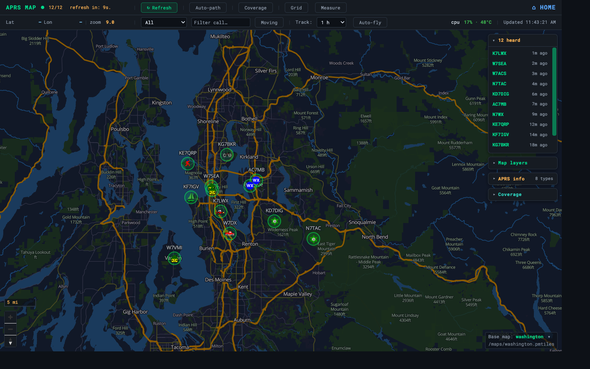
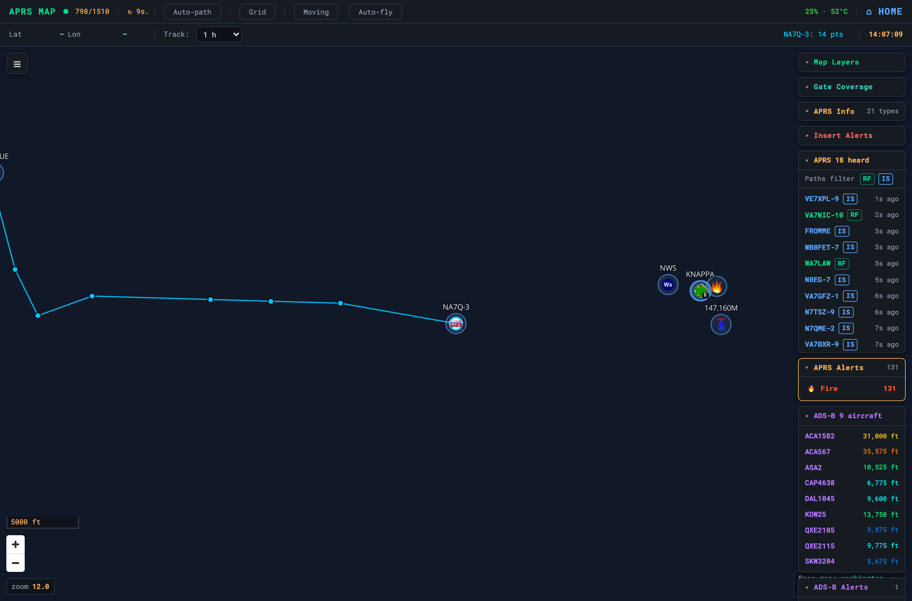

APRS
APRS — Live Map
The flagship Pi capability — heard stations plotted on the offline map
APRS is the flagship Pi capability. OASIS installs and supervises GrayWolf — a browser-based APRS TNC, iGate, and digipeater — plus a companion history API so the dashboard plots live stations on the offline map. Both are pre-checked in the setup menu.

GrayWolf runs its own web UI on port 8080; OASIS reads its history
database and shows the stations on the dashboard and at /server/aprs/map.html.
The map refreshes every 15 seconds.
Map features
| Station markers | APRS symbol icons with callsign labels; click for last-heard time, speed, course, altitude, and path |
| Historical track | ⟳ Show track draws a station’s position history; the window (1 h → all) is selectable and re-fetches each cycle |
| Auto-fly | ✈ Auto-fly flies to the tracked station’s latest position on each refresh |
| Recent-heard panel | Newly heard/updated stations, newest-first; click a callsign to fly there. New markers get an amber sonar-ping that settles into a dim halo |
| Focus via URL | Clicking a callsign in the dashboard table opens the map at ?focus=CALLSIGN and loads its track |

ℹ
The map tiles are the same offline PMTiles basemap the rest of OASIS uses — not a single tile comes from the internet.
OASIS · off-grid amateur station information suite